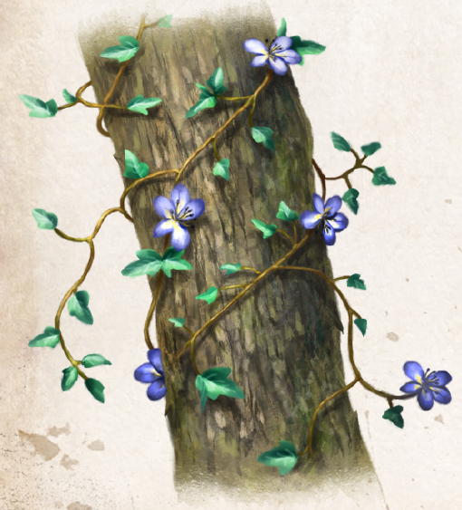

In ganz Aventurien nördlich einer Linie Havena-Perricum wächst der Ulmenwürger im Wald und an Waldrändern. Er windet sich bevorzugt um alte Ulmen, was ihm zu seinem bildhaften Namen verholfen hat, denn tatsächlich kann er solchen Bäumen bei allzu üppigem Wachstum stark zusetzen. Der Ulmenwürger kann ein hohes Alter erreichen und krallt sich mit Haftwurzeln förmlich an seinen Wirt, zu dem er immer mehr in Konkurrenz um Nährstoffe und Wasser tritt. Er gilt darum als Parasit. Sein Wuchsverhalten sowie seine immergrünen, dreibis fünffach gelappten Blätter ähneln denen des Efeus. Die Blätter des Ulmenwürgers stehen jedoch bei Weitem nicht so dicht beieinander und zeichnen sich zudem durch eine glänzende Oberfläche aus, die Schmutz und Sonnenstrahlen gleichermaßen abweist. Letzteres setzt wirksam den Wasserverlust der Ranke herab. In den Monaten Efferd und Travia blüht der Ulmenwürger. Seine blauen Blüten sind im Herzen weiß-gelb und verströmen einen süßen Geruch.
Diese Blüten sind es, die über eine hervorragende Heilwirkung verfügen und darum sehr begehrt sind. Zwölf davon mit heißem Wasser aufgegossen verbessern nicht nur die nächtliche Regeneration, sie senken sogar die Wahrscheinlichkeit einer Ansteckung mit Wundfieber. Dem süßen Geruch zum Trotz, schmeckt der Absud nicht gut, sondern leicht seifig. Getrocknete Blüten tragen den wenig verheißungsvollen Namen „Würgertee“. Meist ist diese Variante wohlschmeckender, da noch andere aromatische Kräuter wie Minze oder Kamille beigemengt werden, ohne die Wirksamkeit zu mindern.
Alternative Namen: Nordwirsel
Verbreitung:
Landschaftstyp: Sümpfe, Marschen und Moore, Wälder
Regionen: Wälder des Nordens (gewöhnlich), Nördliche Feuchtländer (selten)
Suchschwierigkeit: -2
Bestimmungsschwierigkeit: -2
Anwendungen: 1/2/3/4/5/6
Wirkung:
Roh:
Berührung: keine
Einatmung: keine
Verzehr: Schmeckt seifig. Während der nächsten Ruhephase werden 2 LeP zusätzlich regeneriert.
Verarbeitet: siehe Rezepte
Preis: 6 / 9 Silbertaler
Rezepte:
Elixiere: Heilsalbe
Alltagsarzneien und Volksbrauchtum:
Der Blütenfarbe wegen - und weil er seine Heilwirkung nur in Wasser entfaltet - gilt der Ulmenwürger im Binnenland des Nordens als efferdgefällig.
Am Tag des Wassers (1. Efferd) werden seine Blüten dort als Opfergabe Bächen oder Flüssen anvertraut.
Haltbarkeit:
Roh: siehe Haltbarmachung
Verarbeitet: Würgertee gekocht und verschlossen 1 Monat